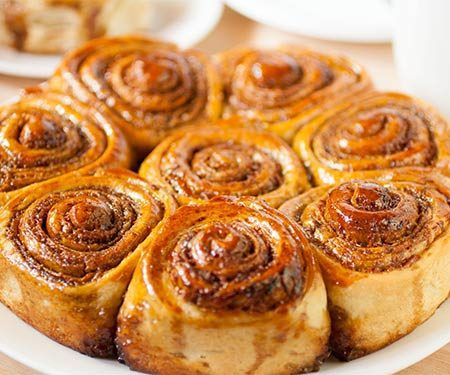

Golfeado

Description
Golfeados are a wonderfully delicious Venezuelan take on sticky buns. Adding cheese to a
sweet roll might seem
unusual, but it adds a wonderful layer of flavor. These sweet treats are definitely worth a try!
Ingredients
For the dough
- 3/4 cup warm milk (110°F to 115°F; 43°C to 46°C)
- 2 (1/4-ounce packages) active dry yeast
- 1/4 cup sugar
- 2 tablespoons packed dark brown sugar
- 3 cups all-purpose flour, plus additional for dusting counter and rolling pin
- 1 teaspoon salt
- 2 large eggs, at room temperature, lightly beaten
- 1 tablespoon honey
- 1 teaspoon pure vanilla extract
- 4 tablespoons (2 ounces) unsalted butter, softened
- 1 tablespoon aniseed
- Vegetable oil for greasing bowl
For the filling:
- 8 ounces Latin American firm white cheese, finely grated
- 1/2 cup packed dark brown sugar
- 1 teaspoon ground cinnamon
- 1 teaspoon aniseed
- 4 tablespoons (2 ounces) unsalted butter, softened
For the Melado (Glaze):
- 1 1/2 cups packed dark brown sugar
- 1 cup water
Steps
- For the dough:
Combine 1/4 cup milk, yeast, and 1/4 teaspoon sugar in small bowl. Let stand until mixture foams, 5 to 10
minutes.
- Combine remaining sugar, dark brown sugar, flour, and salt in large bowl. Add remaining milk, eggs, honey,
vanilla, and yeast mixture and mix on low speed with hook attachment until ingredients are combined, about 2
minutes.
- Add butter and aniseed and mix on medium speed until a smooth, shiny dough forms, 6 to 8 minutes.
- Lightly oil a large bowl. Place dough in bowl, cover with clean, damp kitchen towel and let rise in a warm
place until doubled in size, about 1 hour.
- For the filling:
Meanwhile, combine all but 2 tablespoons cheese, dark brown sugar, cinnamon, and aniseed in medium bowl.
Cover with plastic wrap and refrigerate until needed.
- Lightly dust a clean, dry work surface with flour. Coat hands lightly with flour (dough will be sticky) and
transfer to work surface. Lightly rub rolling pin with flour. Roll the dough out to into a 16- by 14-inch
rectangle.
- Brush the dough with butter, leaving a 1/2-inch border on all sides. Sprinkle the buttered area with cheese
mixture.
- Beginning with the long side, roll the dough to form a 16-inch-long log. As you roll, brush off excess flour
with a clean, dry pastry brush.
- Cut the log crosswise into 12 rolls. Arrange rolls on a parchment lined baking sheet, cut-side up. Press
down to gently flatten (the rolls will cinch as you cut them).
- Cover with oiled plastic wrap and allow to rise in a warm place until doubled in size, about 1 hour.
- Adjust oven rack to middle position and preheat oven to 350°F. Bake 20 minutes until golden
- For the Melado(Glaze):
While the golfeados are baking, combine brown sugar and water in medium saucepan. Bring to boil over
medium-high heat, stirring until sugar is completely dissolved. Reduce heat to medium and cook syrup until
thickened, syrupy, and reduced to 1 1/2 cups, 5 to 7 minutes. Remove from heat.
- After golfeados have been baking for 20 minutes, brush them with half the melado and return to oven for 10
minutes.
- Transfer baking sheet to cooling rack and brush golfeados with remaining melado. Cool about 10 minutes and
sprinkle with remaining cheese. Serve warm.
Special Equipment
Electric mixer with dough hook attachment, rolling pin, parchment paper, large baking sheet, cooling rack, medium
saucepan, pastry brush, plastic wrap
Return Home
Top